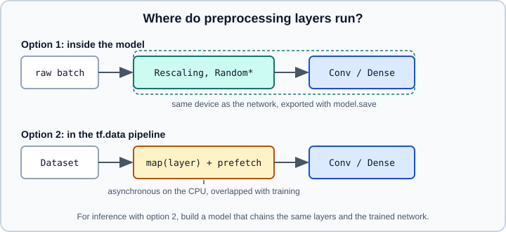

Keras Preprocessing Layers
|
This content was generated with the assistance of AI and should be verified against the official documentation before being relied on in production. |
Keras preprocessing layers turn raw inputs (strings, integer categories, unscaled numbers, full-size images) into the tensors a network expects, and they do it as ordinary Keras layers. Because they are layers, the same preprocessing can be placed inside a model, mapped over a tf.data pipeline or exported with the trained network, which removes most training-serving skew. This page covers the catalogue, the adapt() workflow, the two placement options, saving, and the legacy utilities that Keras 3 dropped. Disk loaders such as image_dataset_from_directory are on Loading Images, Text and Audio from Disk, the pipeline machinery on Input Pipelines with tf.data and tf.data Performance, and ready-made datasets on TensorFlow Datasets. Text models that consume TextVectorization output are on Text, RNNs and Embeddings, and a full image workflow on Image Classification with CNNs.
It targets Python 3.13, TensorFlow 2.21 with Keras 3.15 (TensorFlow 2.22 is "upcoming" and not covered), and was checked against the official documentation on 2026-10-30. Examples were run on Python 3.13 with TensorFlow 2.21 and Keras 3.15 (CPU) on 2026-10-31. For the scikit-learn counterparts of scaling and encoding see scikit-learn scaling and categorical encoding.
The catalogue
The Keras 3 API reference groups the layers by the kind of data they handle:
| Group | Layers |
|---|---|
Text |
|
Numerical features |
|
Categorical features |
|
Image preprocessing |
|
Image augmentation |
|
Audio |
|
All of them live in keras.layers. The legacy keras.layers.experimental.preprocessing namespace belonged to Keras 2 and is not part of the Keras 3 API; import from keras.layers.
Stateless and stateful layers
Layers such as Rescaling, Resizing, CenterCrop, CategoryEncoding and Hashing are stateless: their behaviour is fixed by constructor arguments. Five layers learn a state from data: Normalization (mean and variance), Discretization (bin boundaries), StringLookup and IntegerLookup (vocabularies) and TextVectorization (a vocabulary after standardization and splitting). That state is stored as non-trainable weights, so it is saved with the model and is not touched by the optimizer. You set it in one of two ways:
-
call
layer.adapt(data)once before training, with a NumPy array, atf.data.Datasetor, for the lookup and text layers, a list of strings; -
pass the state to the constructor (
mean=andvariance=,bin_boundaries=,vocabulary=), which is the right choice when you have computed it elsewhere.
import numpy as np
import keras
from keras import layers
x_train = np.random.default_rng(0).normal(5.0, 3.0, size=(1000, 4)).astype("float32")
norm = layers.Normalization(axis=-1)
norm.adapt(x_train) # computes per-feature mean and variance
print(norm.mean.shape) # (1, 4) -- one statistic per feature
batch = x_train[:3]
print(norm(batch)) # roughly zero mean, unit variance per column
# Equivalent, with precomputed statistics (no adapt call needed)
norm2 = layers.Normalization(mean=x_train.mean(axis=0), variance=x_train.var(axis=0))adapt() must only see training data; adapting on the full dataset leaks validation statistics. Adapting a second time replaces the state unless you pass reset_state=False where the layer supports it (check the layer’s reference page). For very large vocabularies (the TensorFlow guide cites hundreds of megabytes) do not call adapt(): precompute the vocabulary with a batch tool, store it in a file and pass the file path as vocabulary=.
Numerical features
Normalization standardizes by default. With axis=-1 it keeps one mean and variance per last-axis feature; with axis=None it uses a single scalar statistic for the whole tensor, which suits images. invert=True undoes the scaling, useful for converting a regression head’s output back to the original units. Discretization buckets numbers: give bin_boundaries directly or num_bins and call adapt() to learn quantile boundaries.
disc = layers.Discretization(bin_boundaries=[18, 35, 60], output_mode="int")
print(disc(np.array([[12.0], [20.0], [70.0]]))) # bucket indices 0, 1, 3
# Turn bucket indices into one-hot vectors with CategoryEncoding
enc = layers.CategoryEncoding(num_tokens=4, output_mode="one_hot")
print(enc(disc(np.array([[12.0], [20.0], [70.0]]))))The ideas, and the pitfalls of scaling only on training data, are the same as in Neural Network Fundamentals and Training Deep Networks.
Categorical features
colors = ["red", "green", "blue", "green", "red", "red"]
lookup = layers.StringLookup(output_mode="int")
lookup.adapt(colors)
print(lookup.get_vocabulary()) # ['[UNK]', 'red', 'green', 'blue'] -- sorted by frequency
print(lookup(["red", "purple"])) # [1, 0]: unseen values map to the OOV index 0
onehot = layers.StringLookup(output_mode="one_hot")
onehot.adapt(colors)
print(onehot(["blue"])) # a vector of length vocabulary_size()
ids = layers.IntegerLookup(vocabulary=[10, 20, 30])
print(ids([20, 99])) # 99 is out of vocabulary
# High-cardinality integer ids: hash into a fixed number of bins, then encode
hasher = layers.Hashing(num_bins=16)
multi_hot = layers.CategoryEncoding(num_tokens=16, output_mode="multi_hot")
print(multi_hot(hasher(np.array([[123456, 987654]]))))Details that cause bugs:
-
StringLookupreserves index 0 for out-of-vocabulary values by default;IntegerLookupreserves 0 for the mask token and 1 for out-of-vocabulary values, configurable withmask_tokenandoov_token. Do not assume the first real category is index 0, and size anEmbeddingwithlayer.vocabulary_size(). -
output_modeis"int","one_hot","multi_hot","count"or"tf_idf"on the lookup layers; the encoded modes produce dense or sparse features (sparse=Trueis available on several layers). -
Hashingtrades memory for collisions: a largernum_binslowers collisions.HashedCrossinghashes the combination of two features (a feature cross) into bins without building the cross vocabulary. -
CategoryEncodingexpects integers in the range 0 tonum_tokens - 1; out-of-range values raise an error on CPU. -
An
Embeddingafter a lookup layer is the usual route for high-cardinality features; the same idea is discussed in Embeddings and Representation Learning.
A common structured-data layout is one Input per column, one preprocessing layer per column, a Concatenate, then dense layers. The Keras functional API in Sequential and Functional Models supports that multi-input graph directly.
Text: TextVectorization
TextVectorization standardizes strings, splits them into tokens, optionally builds n-grams and maps tokens to integers or to a dense encoding, all in one layer.
corpus = ["The cat sat on the mat.", "Dogs are great!", "The dog chased the cat."]
vec = layers.TextVectorization(
max_tokens=1000, # vocabulary cap, including the padding and OOV entries
output_mode="int", # sequence of token ids
output_sequence_length=8, # pad or truncate to a fixed length
standardize="lower_and_strip_punctuation",
split="whitespace",
)
vec.adapt(corpus)
print(vec.get_vocabulary()[:6]) # ['', '[UNK]', 'the', 'cat', ...]
print(vec(["the cat and the bird"])) # shape (1, 8), padded with zeros
# Bag of words / n-grams for a plain Dense classifier
bow = layers.TextVectorization(max_tokens=1000, output_mode="tf_idf", ngrams=2)
bow.adapt(corpus)Points to know:
-
output_mode="int"feeds anEmbeddingand then a recurrent, convolutional or attention model;"multi_hot","count"and"tf_idf"feed aDensemodel and ignore token order. -
Without
output_sequence_length,"int"output is padded to the longest sequence in each batch, so the length varies per batch. -
standardizeandsplitaccept a string option or a callable; custom callables must be TensorFlow-compatible string ops to run in atf.datapipeline. -
The TensorFlow guide states that
TextVectorizationruns only on the CPU, so on a GPU or TPU it belongs in thetf.datapipeline rather than inside the model. -
For subword tokenization (WordPiece, BPE, SentencePiece) use the tokenizers in KerasHub (see Pre-trained Models with KerasHub) rather than
TextVectorization, which tokenizes on whole words by default. -
Keras 3 ships
text_dataset_from_directoryfor loading folders of text files; see Loading Images, Text and Audio from Disk.
Images: resizing, rescaling and augmentation
Resizing(height, width) changes size (with crop_to_aspect_ratio=True it crops instead of stretching), Rescaling(scale, offset) maps pixel ranges (Rescaling(1/255) for 0 to 1, Rescaling(1/127.5, offset=-1) for -1 to 1) and CenterCrop takes the central region. Pretrained models usually document their own expected scaling; for the Keras applications models, use the matching preprocess_input, as covered in Transfer Learning and Fine-Tuning.
The augmentation layers apply random transformations only when called with training=True, which fit() sets automatically; during evaluate() and predict() they pass inputs through unchanged, like Dropout.
augment = keras.Sequential([
layers.RandomFlip("horizontal"),
layers.RandomRotation(0.1), # fraction of a full turn: +/- 36 degrees
layers.RandomZoom(0.1),
layers.RandomContrast(0.2),
], name="augment")
images = np.random.default_rng(1).uniform(0, 255, size=(8, 96, 96, 3)).astype("float32")
same = augment(images, training=False) # identity
varied = augment(images, training=True) # a different random transform for each imageNotes:
-
Each random layer draws independent random values per image in the batch, so one batch contains many different transforms.
-
Pass
seed=to a layer for repeatable draws; global seeding is described in Tensors, Dtypes and Random Numbers. -
Pipeline,RandAugment,AugMix,CutMixandMixUpare the newer composite policies in the Keras 3 catalogue. Check each layer’s page for the label and bounding-box formats it supports. -
Augment only the training set. Validation and test data get the deterministic resize and rescale steps only.
-
For stateless, seed-reproducible augmentation inside
dataset.map, the TensorFlow tutorial recommends thetf.image.stateless_random_*operations over the oldertf.image.random_*ones.
Placement: inside the model or in tf.data

The figure is an original drawing of the two options described in the TensorFlow preprocessing guide.
| Inside the model | In tf.data |
|
|---|---|---|
Runs |
On the accelerator, synchronously with the network |
On the CPU, asynchronously, overlapped with training by |
Export |
Saved with the model, so inference accepts raw inputs |
Not part of the model; chain the layers with the trained model for inference |
Recommended for |
|
|
TPU |
Only |
Everything else |
import tensorflow as tf
AUTOTUNE = tf.data.AUTOTUNE
# Option 2: text vectorization inside the input pipeline
raw_ds = tf.data.Dataset.from_tensor_slices((corpus, [0, 1, 0])).batch(2)
vec_ds = raw_ds.map(lambda text, y: (vec(text), y), num_parallel_calls=AUTOTUNE).prefetch(AUTOTUNE)
# Train on integer ids ...
classifier = keras.Sequential([
layers.Embedding(input_dim=vec.vocabulary_size(), output_dim=16),
layers.GlobalAveragePooling1D(),
layers.Dense(1, activation="sigmoid"),
])
classifier.compile(loss="binary_crossentropy", optimizer="adam", metrics=["accuracy"])
classifier.fit(vec_ds, epochs=3, verbose=0)
# ... then build an end-to-end model that accepts raw strings for serving
inputs = keras.Input(shape=(1,), dtype="string")
outputs = classifier(vec(inputs))
end_to_end = keras.Model(inputs, outputs)
print(end_to_end(tf.constant([["the cat sat"]])))In the in-model option the layers appear at the start of a Sequential or functional model, for example Sequential([Input((96, 96, 3)), Rescaling(1/255), augment, Conv2D(...), ...]). Batch size matters for stateful layers during distributed training; create preprocessing layers inside strategy.scope() as shown in Distributed Training.
Backends and data types
Under Keras 3 the same model code can run on TensorFlow, JAX or PyTorch backends (see Keras Multi-Backend). The TensorFlow guide for these layers is written for the TensorFlow backend, and its string-handling layers (TextVectorization, StringLookup) depend on TensorFlow string ops. Inside a model on a non-TensorFlow backend, stick to the numeric and image layers. With Keras 3.15 on the JAX or PyTorch backend (TensorFlow installed), a StringLookup layer works when called directly on Python strings and inside a tf.data map, but a keras.Model with a string keras.Input fails in predict() with ValueError: Invalid dtype: str96. Keep string layers in the tf.data pipeline on those backends.
Other practical details:
-
Preprocessing layers run in
float32by default for numeric work; under a mixed-precision policy (see Mixed Precision) normalization may producefloat16orbfloat16activations, so check dtypes at the model boundary. -
Layers are traced by
tf.functionwhen used inmap; avoid Python side effects in customstandardizecallables (see Graphs and tf.function). -
adapt()on a largetf.data.Datasetiterates the whole dataset once; adapt on a representative sample if that is too slow.
Legacy keras.preprocessing utilities in Keras 3
Older books, blog posts and Keras 2 code use a different family under keras.preprocessing: ImageDataGenerator, Tokenizer, pad_sequences through keras.preprocessing.sequence, text_to_word_sequence, and TimeseriesGenerator. Keras 2.9 and later marked these as deprecated in favour of the layers and dataset utilities above. In Keras 3 the situation, as far as the Keras 3.15.1 source shows, is:
| Legacy item | Keras 3 status |
|---|---|
|
Not exported: |
|
Not present: the |
|
The submodule still exists in 3.15.1; the Keras 3 data loading reference lists |
|
Still available only through the separate |
Sources: https://github.com/keras-team/keras/blob/v3.15.1/keras/api/preprocessing/init.py and https://github.com/keras-team/keras/blob/v3.15.1/keras/api/preprocessing/image/init.py
Code copied from older tutorials that calls ImageDataGenerator(rescale=1./255) or Tokenizer(num_words=...) will fail with an AttributeError or ImportError on Keras 3. Replace them as follows: Rescaling and the Random* layers for ImageDataGenerator options, TextVectorization for Tokenizer plus pad_sequences, and tf.data for custom iteration. Whether a specific legacy symbol is importable can depend on the exact Keras release, so check the module in your installed version.
Common mistakes
-
Forgetting
adapt(): an un-adaptedNormalizationor lookup layer raises an error or produces meaningless output. -
Adapting on the validation or test set.
-
Putting
TextVectorizationinside a GPU model: it runs on the CPU, so move it totf.dataand chain it for export. -
Applying augmentation layers outside
fit()withouttraining=Trueand wondering why nothing changes. -
Hard-coding an embedding size instead of calling
vocabulary_size(), which includes the OOV and mask entries. -
Assuming
Rescalingis needed twice: a model fromkeras.applicationsoften includes or expects its own scaling.